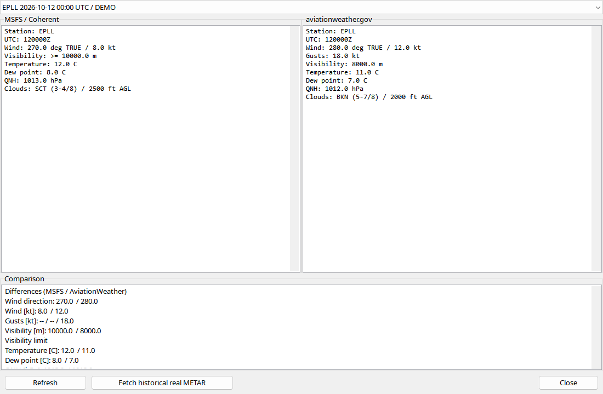

Select a takeoff or landing first. Departure snapshots belong to the ground-to-air transition; arrival snapshots to touchdown. Simulator and aviationweather.gov reports are stored separately with source/time. The dialog shows raw text, decoding and differences. Compare station and observation time first: another airport or later report can explain a mismatch. Missing TAF is not a good-weather forecast; the station may not publish one.
Open weather for a recorded takeoff/landing. Simulator reports and aviationweather.gov observations are stored separately with source/time.
| Option / action | Behavior and limitations |
|---|---|
| Simulator | Optional MSFS24-FDR-Bridge queries available avionics weather. Availability depends on MSFS/station; bridge installation cannot make a station publish TAF. |
| Capture | Departure queries occur around ground-to-air transition, arrival around touchdown, using available plan/airport data. They are event snapshots, not continuous official observations. |
| Real reports | Online retrieval shows observation/retrieval times. A later fetch may not recover the historical event's exact weather. |
| Decode | Station/time, wind/gust, visibility, weather, cloud, temperature/dew point and pressure when reported. Missing groups remain absent. |
| Comparison | Differences can reflect station/time or simulator settings. Pressure at aircraft altitude is not airport QNH. |
| Offline | Saved reports remain with the flight; fetching new data needs connectivity and permitted controls. |
